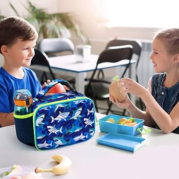
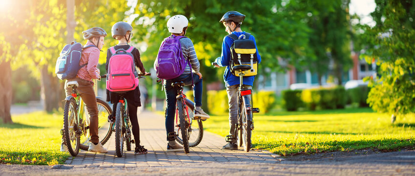
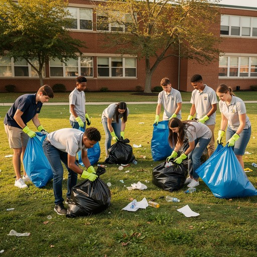

SDG 13 — Climate Action
Climate Change and Young People
Young people will experience many of the long-term effects of climate change, but they are also capable of creating meaningful solutions. Through everyday choices, education, technology and community participation, students can help build a greener and more sustainable future.

01
Why Young People Matter in Climate Action
Young people will live with the long-term environmental,economic and social effects of climate change. Their choices today can influence the type of future experienced by their communities and future generations.
Students can also influence their families, friends, universities and future workplaces. When young people adopt responsible habits and encourage others to participate, small individual actions can develop into wider community change.
Young people can contribute by:
- Learning about climate change and sharing reliable information.
- Making environmentally responsible lifestyle choices.
- Participating in local climate-action programmes.
- Encouraging universities and organisations to act responsibly.
02
Sustainable Student Lifestyles
Students make daily decisions involving food, water, electricity, clothing and shopping. Choosing more sustainable alternatives can reduce waste and lower environmental impact.
A sustainable lifestyle does not require students to change everything immediately. Beginning with one realistic action and practising it consistently is more effective than attempting several difficult changes at once.
Simple student actions
- Carry a reusable water bottle and lunch container.
- Switch off unused lights, fans and electronic devices.
- Avoid unnecessary purchases and disposable products.
- Plan meals to reduce food waste.

03
Greener Travel Choices
Travelling to university, work and social activities can produce greenhouse-gas emissions, especially when people regularly travel alone in private vehicles.
Walking, cycling, public transport and shared journeys can help reduce the environmental impact of everyday travel. Students can begin by replacing only one or two journeys each week.
Lower-emission travel options
- Walk when travelling short distances.
- Cycle where safe routes are available.
- Use buses or trains when practical.
- Share journeys with classmates travelling to the same area.

04
Campus and Community Climate Action
Individual habits are important, but young people can create a greater impact when they work together. Universities provide opportunities for students to join environmental clubs, campaigns and volunteering programmes.
Activities such as tree planting, beach cleaning, recycling campaigns and climate-awareness events can create visible benefits while encouraging more people to participate.
Ways to participate
- Join a university environmental society.
- Participate in tree-planting or clean-up campaigns.
- Help organise recycling and waste-reduction programmes.
- Encourage friends to join community activities.

05
Using Education and Technology for Climate Action
Education helps young people understand the causes and effects of climate change. It also helps students identify false information and communicate climate issues more responsibly.
Technology students can contribute by developing websites, applications, data systems and digital campaigns that encourage sustainable behaviour or improve environmental awareness.
Ideas for young innovators
- Create applications that track energy or water use.
- Develop websites that promote local climate programmes.
- Use social media to share reliable environmental information.
- Explore careers connected to renewable energy and sustainability.